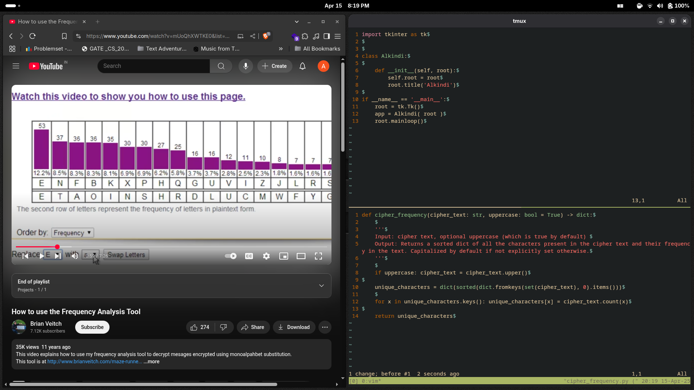
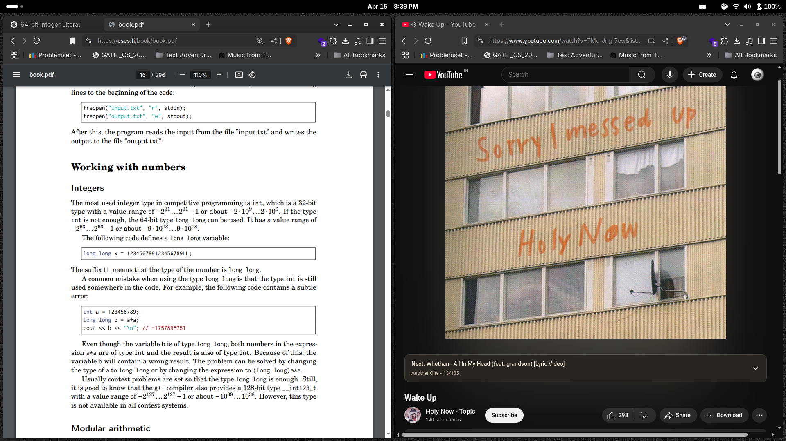
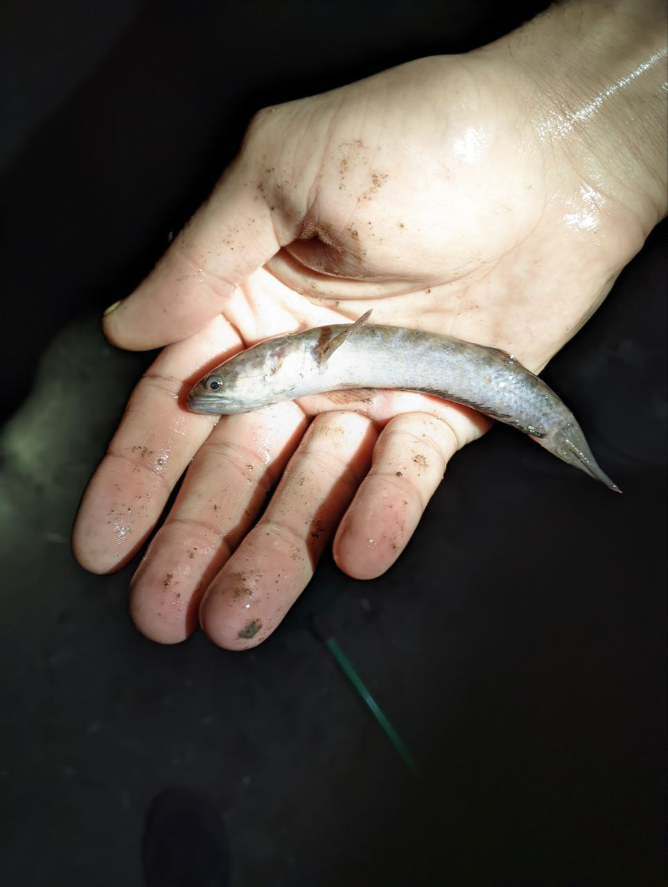
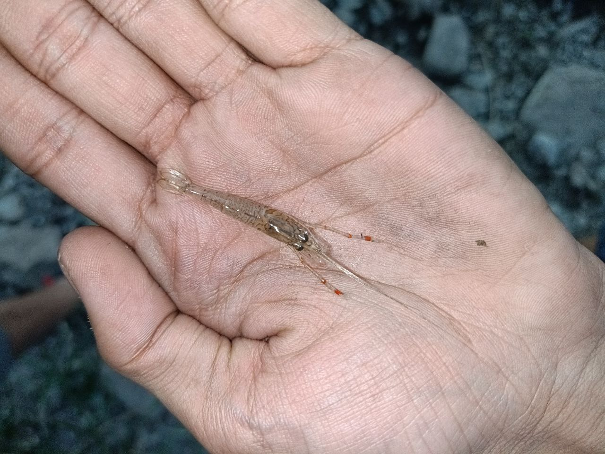
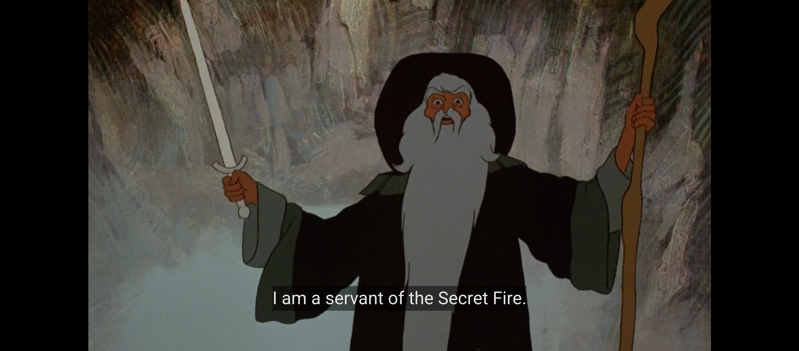
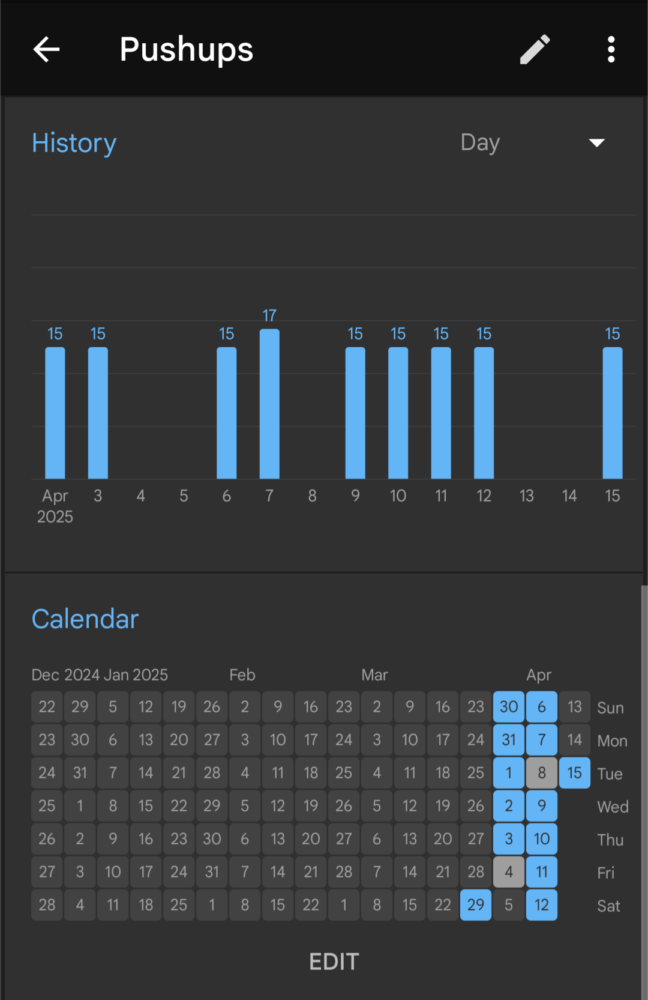

Nineteen years old with nothing that justifies my existence. I'm gonna change that. By this time next year, I will do nineteen substantial things that will help improve the quality of my future and differentiate me from the rest of the population. They may be in the form of projects, certifications, competitive programming, personal achievements, or whatever.
All that is gold does not glitter
Not all those who wander are lost